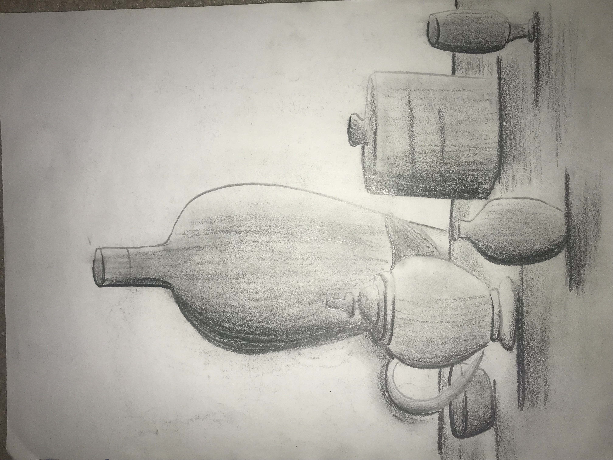
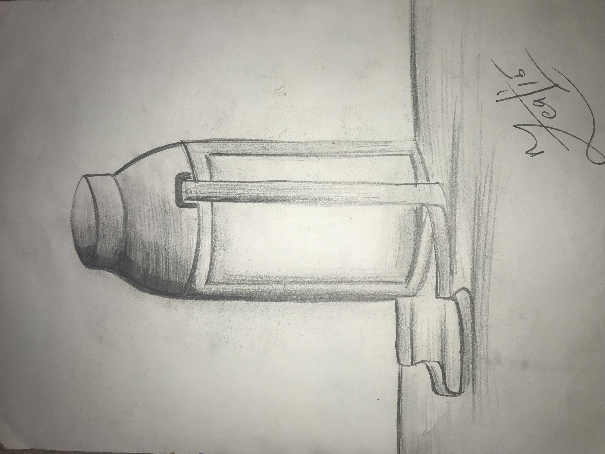
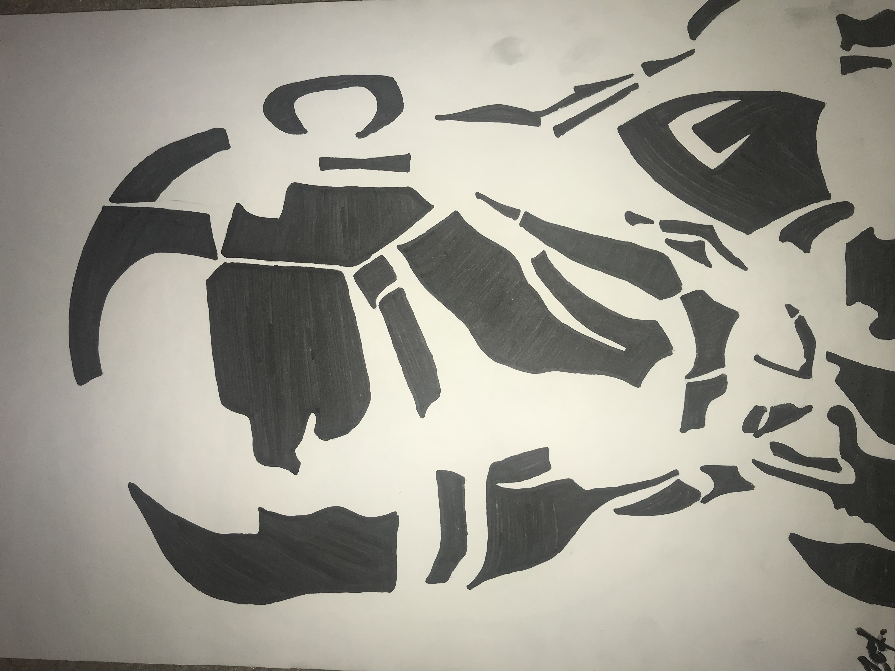
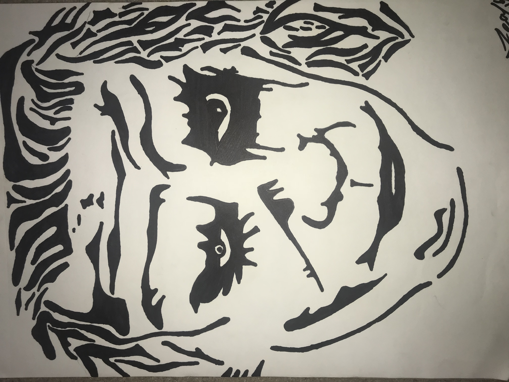
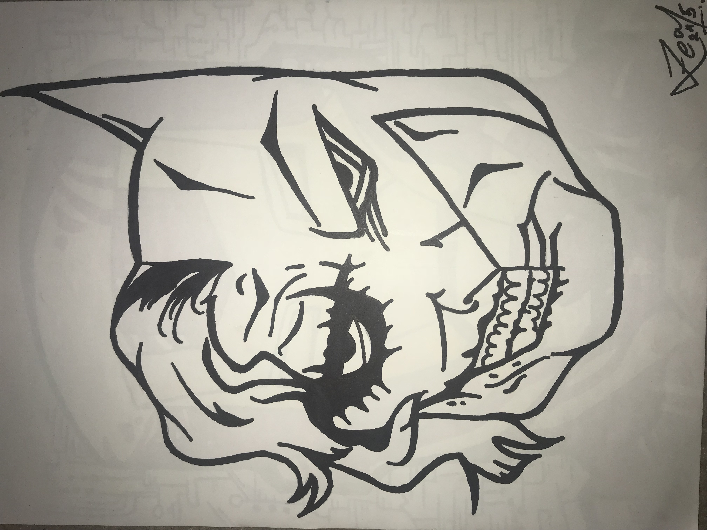

-
Still
Life
-
Still
Life -
Still
Life
-
Still
Life -
Iron Man
 -
Why
So
Serious? -
Joker
Vs.
Batman -
Bridge,
spotted
Over the past few years I have made some sketches as well. I do not have a particular preference for the types of sketches I made. Sometime I would just sketch a still life by using things I have lying around the around and putting them on a table top. While other times I sketched some open landscape I imagined in my head. I have sketched a few superheros. Yes, I know that Joker is nowhere near a hero by the traditional definition of a hero. Then again, everyone thinks they are the hero in their own story and I think it is important to listen to their side of the story as well.